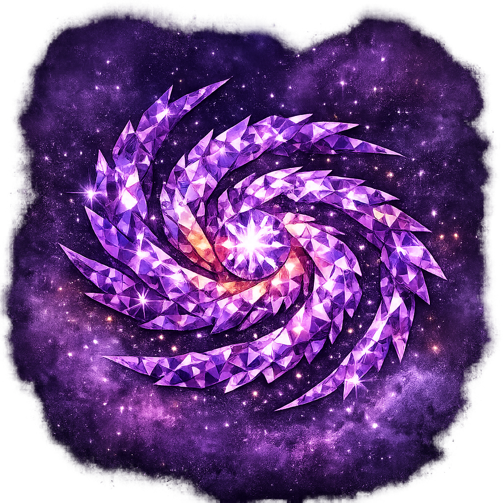

The Cosmic Diamond is the advanced level of practice, where the witch steps beyond the Moon and the Sun into the infinite expanse of space. Here, galaxies become guides, stars become teachers, and cosmic currents weave the fabric of destiny.
This level is for those deeply devoted to astronomy, mysticism, and the fortune of the cosmos. It draws upon the prosperity and good luck of the Maneki Neko cats, symbols of abundance and radiant charm, blending earthly fortune with celestial wisdom.
The Cosmic Diamond emphasizes advanced practice — rituals lasting 90 minutes or more, involving layered altars, multiple candles, and extended spreads that reach into the galaxies themselves. Here, the practitioner learns to align not only with cycles of the Moon and Sun, but with the vast architecture of the universe.
To walk the Cosmic Diamond path is to embrace infinity: the galaxies, the stars, and the mysteries of space. It is the level where reflection becomes radiance, and radiance becomes cosmic creation.